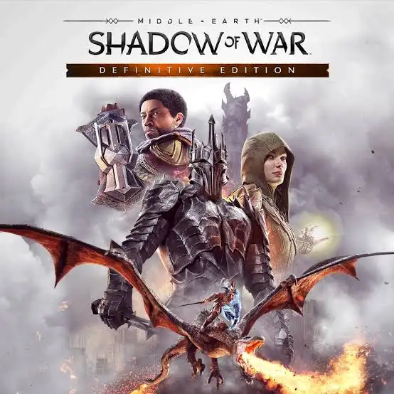

Informações
Ano de criação: 2017
País de origem: Estados Unidos
Desenvolvedora: Monolith Productions

Descrição
Middle-earth: Shadow of War é um jogo de ação e aventura em mundo aberto baseado no universo de O Senhor dos Anéis. O jogador controla Talion, um guerreiro com habilidades sobrenaturais, que luta contra as forças de Sauron utilizando o inovador sistema Nêmesis, que cria inimigos únicos.
Experiência Pessoal
Eu jogo aproximadamente 8 horas por semana, focando em conquistar fortalezas e evoluir meu exército.